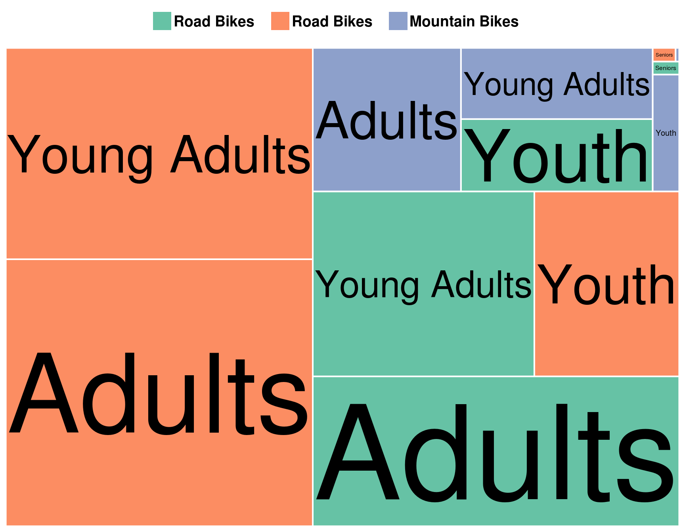
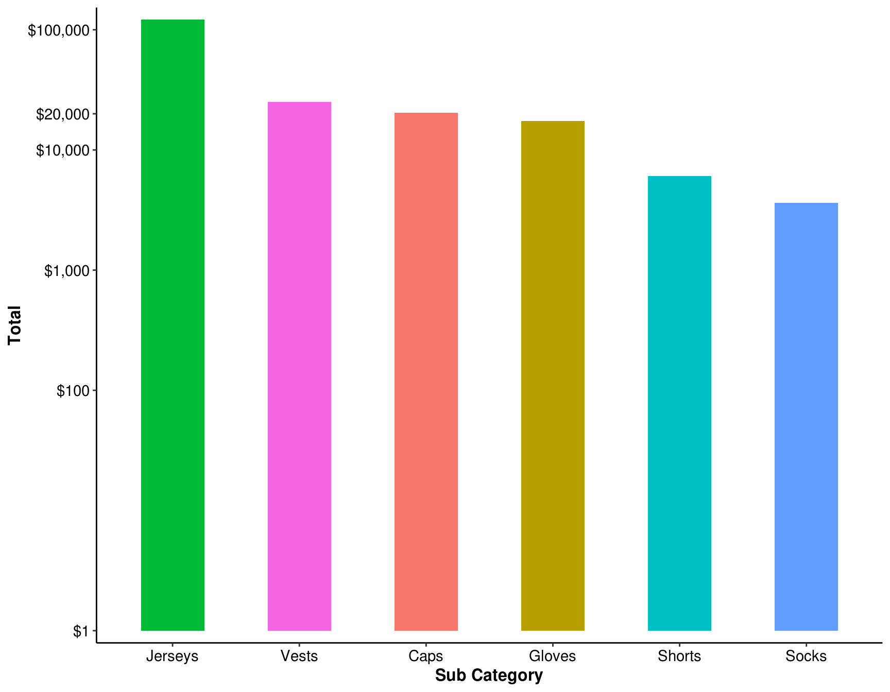
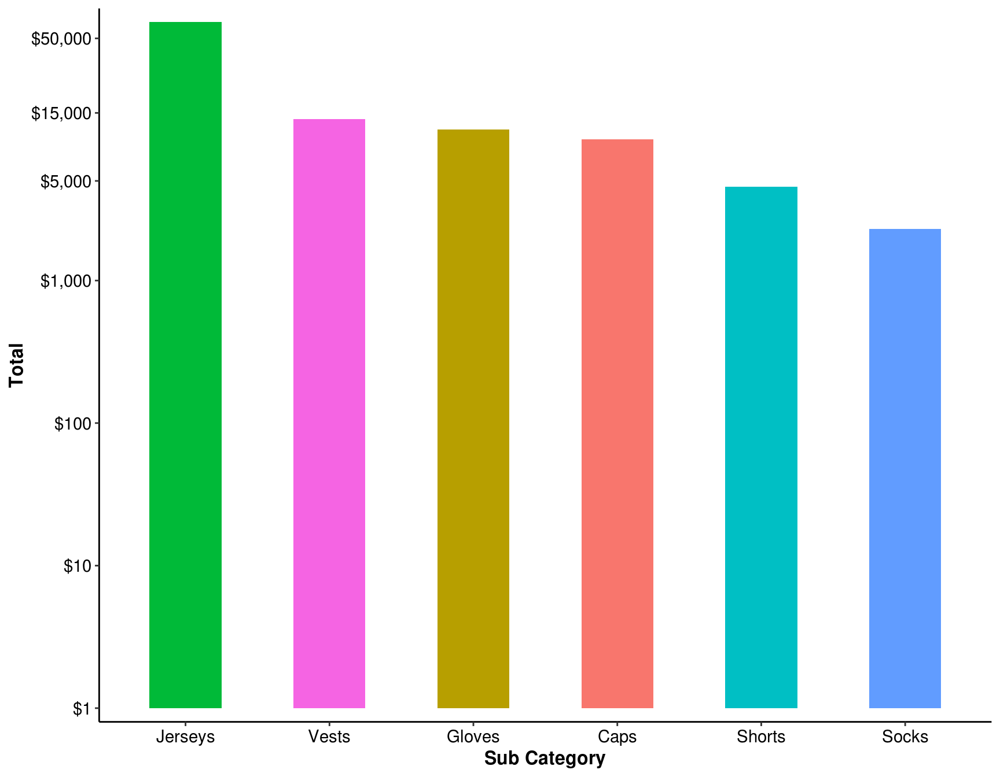
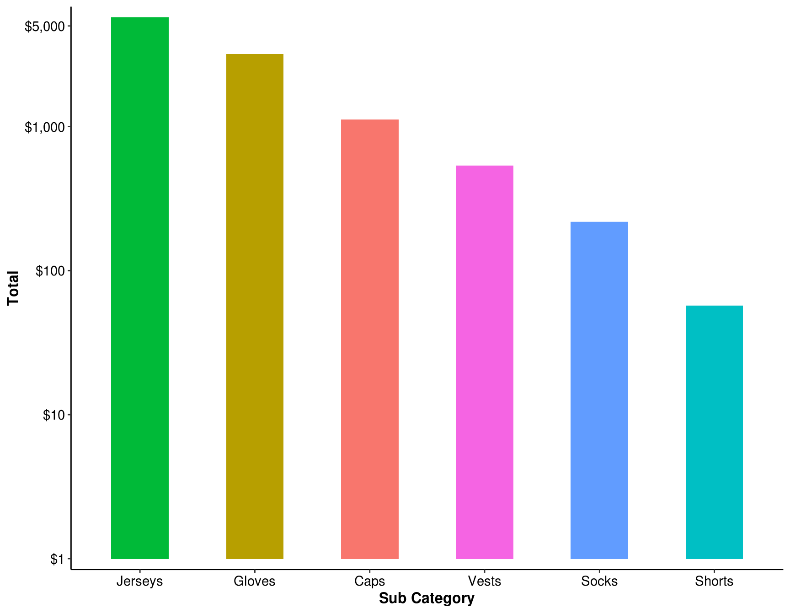

Chapter 8 Reporting: hierarchical chart
Scenario. Upon reviewing the growth report you created, Lucy asked for a report that shows composition of Product Categories and Sub Categories based on certain filters, including Year, Country, Customer Gender, and Age Group.
Specifically, Lucy wants to see the report visualized using a hierarchical chart.
Load necessary libraries
library(tidyverse)
library(treemapify)
library(RColorBrewer)
library(knitr)
library(scales)Load data for Lab7
my_data <- readRDS("./data/processing/data4week3.rds")8.1 Explore the sales composition of bikes category for each age group. Which age group does the composition (rank of sales) differ than the rest?
ans_1 <- my_data %>%
filter(`Product Category` == "Bikes") %>%
group_by(`Age Group`, `Sub Category`) %>%
summarise(Total = sum(Revenue)) %>%
arrange(desc(Total)) %>%
ungroup()
ans_1 %>%
mutate_at(vars(Total), funs(scales::comma)) %>%
kable()| Age Group | Sub Category | Total |
|---|---|---|
| Adults | Road Bikes | 15,723,543 |
| Young Adults | Road Bikes | 12,439,924 |
| Adults | Mountain Bikes | 10,534,548 |
| Young Adults | Mountain Bikes | 7,861,417 |
| Youth | Road Bikes | 5,140,111 |
| Adults | Touring Bikes | 4,078,076 |
| Youth | Mountain Bikes | 2,661,311 |
| Young Adults | Touring Bikes | 2,614,215 |
| Youth | Touring Bikes | 593,930 |
| Seniors | Mountain Bikes | 66,250 |
| Seniors | Road Bikes | 59,483 |
| Seniors | Touring Bikes | 9,326 |
Show answer on chart:
ggplot(ans_1, aes(area = Total, fill = `Sub Category`, group = `Age Group`, label = `Age Group` )) +
geom_treemap(colour = "white", size = 2) +
geom_treemap_text(colour = "black", place = "centre", grow = T, min.size = 3) +
scale_fill_brewer(palette = "Set2", labels = paste(ans_1$`Sub Category`, '\t')) +
theme(legend.position = "top",
legend.title = element_blank(),
legend.text = element_text(size = 14, face = "bold")) Answer: Seniors (right upper corner)
Now explore the sales composition of Bikes category for each Age Group for the Male customers.
ans_2 <- my_data %>%
filter(`Product Category` == "Bikes", `Customer Gender` == "M") %>%
group_by(`Age Group`, `Sub Category`) %>%
summarise(Total = sum(Revenue)) %>%
arrange(desc(Total)) %>%
ungroup()
ans_2 %>%
mutate_at(vars(Total), funs(scales::comma)) %>%
kable()| Age Group | Sub Category | Total |
|---|---|---|
| Adults | Road Bikes | 7,565,634 |
| Young Adults | Road Bikes | 6,393,719 |
| Adults | Mountain Bikes | 5,260,117 |
| Young Adults | Mountain Bikes | 3,660,311 |
| Youth | Road Bikes | 2,787,992 |
| Adults | Touring Bikes | 2,028,869 |
| Youth | Mountain Bikes | 1,406,305 |
| Young Adults | Touring Bikes | 1,276,009 |
| Youth | Touring Bikes | 330,496 |
| Seniors | Road Bikes | 44,154 |
| Seniors | Mountain Bikes | 41,447 |
| Seniors | Touring Bikes | 4,563 |
8.2 Now explore the sales composition of bikes category for each age group, for the Male customers. Which age group does the composition differ than the rest?
ggplot(ans_2, aes(area = Total, fill = `Sub Category`, group = `Sub Category`, label = `Age Group` )) +
geom_treemap(colour = "white", size = 2) +
geom_treemap_text(colour = "black", place = "centre", grow = T, min.size = 3) +
scale_fill_brewer(palette = "Set2", labels = paste(ans_2$`Sub Category`, '\t')) +
theme(legend.position = "top",
legend.title = element_blank(),
legend.text = element_text(size = 14, face = "bold")) Answer 2: The composition are the same across Age Group for Male customers.
Answer 2: The composition are the same across Age Group for Male customers.
8.3 Clear all filters. Now, filter for the year 2016 and Germany. Rank the sales from the highest to lowest for the clothing category
ans_3 <- my_data %>%
filter(Year == 2016, Country == "Germany", `Product Category` == "Clothing") %>%
group_by(`Sub Category`) %>%
summarise(Total = sum(Revenue)) %>%
arrange(desc(Total)) %>%
ungroup()
ans_3 %>%
mutate_at(vars(Total), funs(scales::comma)) %>%
kable()| Sub Category | Total |
|---|---|
| Jerseys | 121,186 |
| Vests | 25,190 |
| Caps | 20,441 |
| Gloves | 17,337 |
| Shorts | 6,066 |
| Socks | 3,646 |
Show answer on chart:
ggplot(ans_3, aes(x = reorder(`Sub Category`, -Total), y = Total, fill = `Sub Category`)) +
geom_bar(stat = "identity", width = 0.5, show.legend = FALSE) +
labs(x = "Sub Category") +
scale_y_log10(breaks = c(1, 1e2, 1e3, 1e4, 2e4, 1e5),
expand = c(0.02, 0.0), labels = scales::dollar) +
theme_classic() +
theme(axis.title = element_text(size = 12, face = "bold"),
axis.text = element_text(size = 11, colour = "black"))
8.4 Rank the sales from the highest to lowest for the clothing category. Keep the filter settings and add filter by male customers.
ans_4 <- my_data %>%
filter(Year == 2016, Country == "Germany",
`Product Category` == "Clothing", `Customer Gender` == "M") %>%
group_by(`Sub Category`) %>%
summarise(Total = sum(Revenue)) %>%
arrange(desc(Total)) %>%
ungroup()
ans_4 %>%
mutate_at(vars(Total), funs(scales::comma)) %>%
kable()| Sub Category | Total |
|---|---|
| Jerseys | 64,969 |
| Vests | 13,528 |
| Gloves | 11,511 |
| Caps | 9,776 |
| Shorts | 4,568 |
| Socks | 2,304 |
Show answer on chart:
ggplot(ans_4, aes(x = reorder(`Sub Category`, -Total), y = Total, fill = `Sub Category`)) +
geom_bar(stat = "identity", width = 0.5, show.legend = FALSE) +
labs(x = "Sub Category") +
scale_y_log10(breaks = c(1, 10, 100, 1e3, 5e3, 15e3, 5e4),
expand = c(0.02, 0.0), labels = scales::dollar) +
theme_classic() +
theme(axis.title = element_text(size = 12, face = "bold"),
axis.text = element_text(size = 11, colour = "black"))
8.5 Rank the sales from the highest to lowest for the clothing category. Keep the filter settings and add filter by youth age group
ans_5 <- my_data %>%
filter(Year == 2016, Country == "Germany", `Product Category` == "Clothing",
`Customer Gender` == "M", `Age Group` == "Youth") %>%
group_by(`Sub Category`) %>%
summarise(Total = sum(Revenue)) %>%
arrange(desc(Total)) %>%
ungroup()
ans_5 %>%
mutate_at(vars(Total), funs(scales::comma)) %>%
kable()| Sub Category | Total |
|---|---|
| Jerseys | 5,723 |
| Gloves | 3,208 |
| Caps | 1,119 |
| Vests | 536 |
| Socks | 219 |
| Shorts | 57 |
Show answer on chart:
ggplot(ans_5, aes(x = reorder(`Sub Category`, -Total), y = Total, fill = `Sub Category`)) +
geom_bar(stat = "identity", width = 0.5, show.legend = FALSE) +
labs(x = "Sub Category") +
scale_y_log10(breaks = c(1, 10, 100, 1000, 5000),
expand = c(0.02, 0.0), labels = scales::dollar) +
theme_classic() +
theme(axis.title = element_text(size = 12, face = "bold"),
axis.text = element_text(size = 11, colour = "black")
)